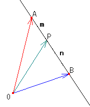

| Let's think how to express the vector OP by vector OA and OB in the right figure. |
 |
How to use this applet1.Drag red point.2.Press "+" or "-" button to change the ratio of AB and BP. 3.Press "Scale up" button to scale up the figure. 4.Press "Scale down" button to scale down the figure. 5.Check "Coodinate" to draw the Coodinate. 6.Check "Parallel line 1" to draw the parallel line1. 7.Check "Parallel line 2" to draw the parallel line2. 8.Press "Init" button to go to the first step. |